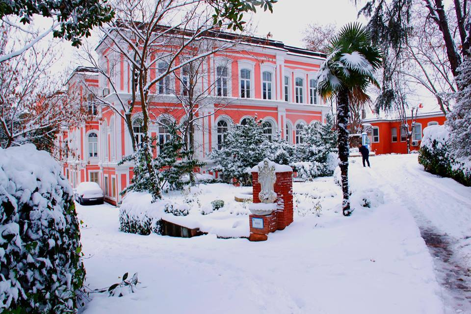
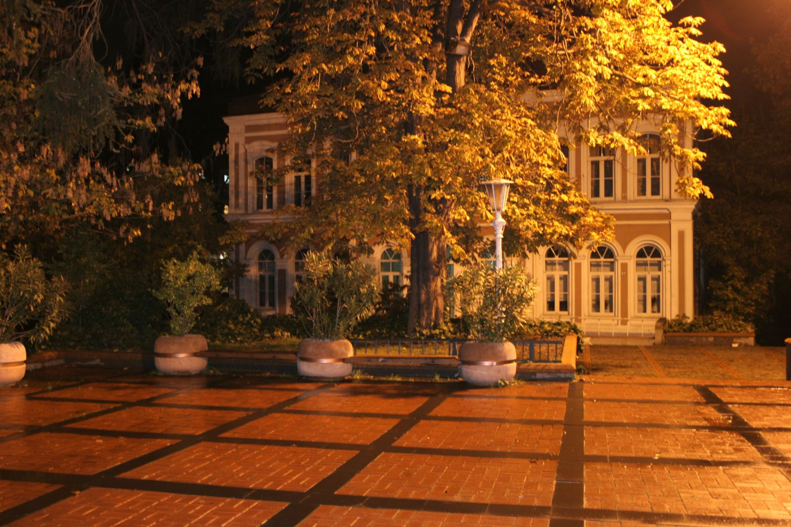
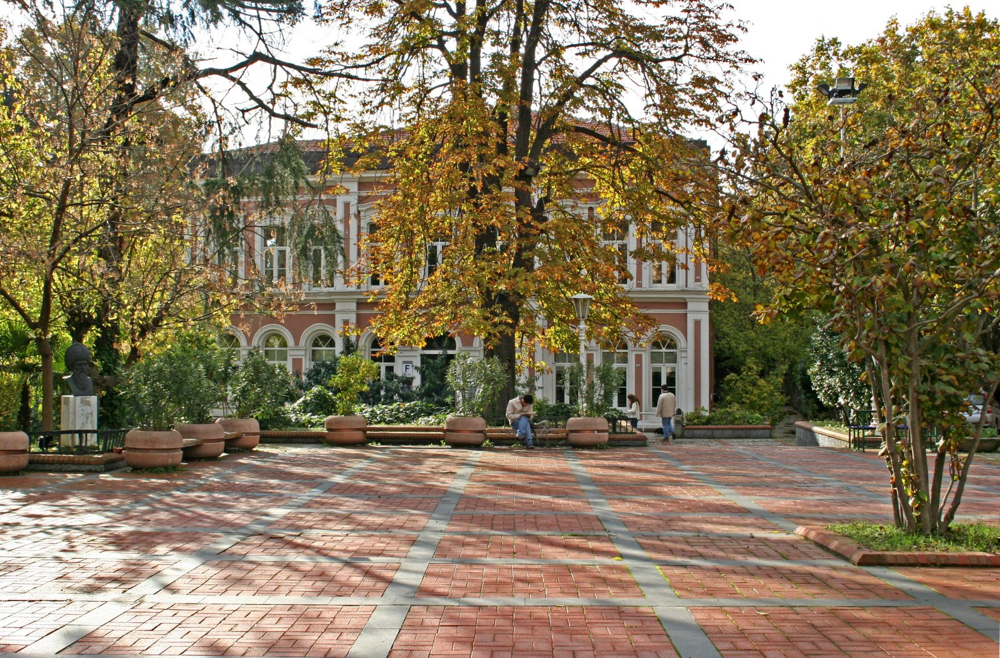

SIKÇA SORULAN SORULAR

Basvuru Kosulları
Tezli Yüksek Lisans, Tezsiz Yüksek Lisans ve Doktora Programlarına Başvuru Koşulları ve Başvuru-Kayıt süreçleri
İNCELE

Mezuniyet Basvuruları
Mezuniyet için gerekli minimum şartlar, yayın kontrol süreci, intihal analizi ve raporlama, mezuniyet başvuru süreçleri
İNCELE

Akademik Takvimler
Başvuru ve Kayıt takvimleri, Mezuniyet Takvimleri, Ders Kayıt Takvimleri ve Sınav Takvimleri
İNCELELisansüstü Formlar
Yüksek Lisans ve Doktora Öğrencilik ve Mezuniyet Süreçleri Boyunca Kulanılacak Form Bilgileri
İNCELE